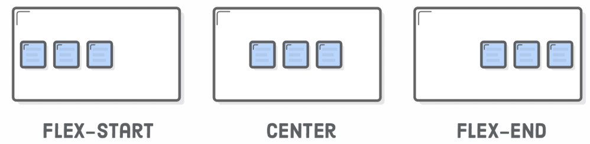
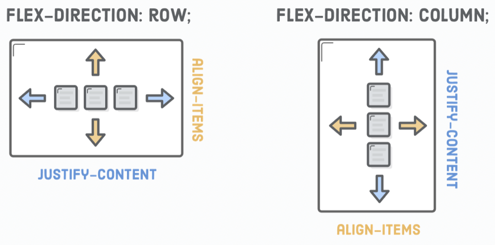
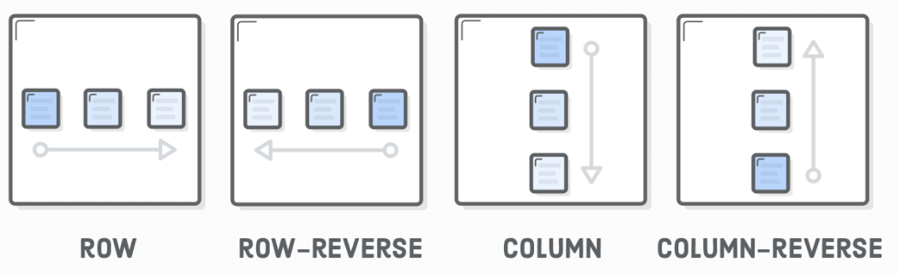

Flexing!
Resources (You are so gonna need them...)
MDN Documentation of justify-content
Flex is a family of sort.
You absolutely butchered the nested flexboxes, by the way.
Flex containers are of display type flex.
Items in flex containers are flex items.
Flexboxes are made to improve on float
functionalities and support more
complex webpage structure.
Every flex container needs the flex
display type declaration for the flex
properties to actually take effect...
The justify-content declaration applies
to the parent container rather than the
element itself. A bit different from how we've
been doing it before.
Some other values for justify-content
is center, flex-start,
flex-end, space-around,
and space-between.

Flexboxes can also go vertically, with
align-items when the container has
a height.
Their values can be center, flex-start,
flex-end, stretch, baseline.
We can specify the flex direction with the... you
guessed it, the flex-direction property.
(It defaults at row, by the way).
Now, rotating the flex direction will rotate
the alignment properties as well.

When flex items' total dimension exceeds the
container's dimension, it will naturally
flow outside. The flex-wrap property
will bump extra items down the next row/column.
Now, HTML elements don't have to appear in
their markup order. More flexbox surprises!

Flexbox only care about immediate children,
not what's nested inside. So you gotta flex
inside of the flex to make more flex depth!
Ya see, these two elements are vertically
aligned!
Flexing inside of flexing!
Okay, so the flex property is shorthand
for flex-grow, flex-strink, and
flex-basis.
The flex-grow property scales the items
in the flex container. That is to say, an item
at 2 is twice as big as an item at 1.
The flex-shirnk property scales the
items down. They default to make the items
fit inside the container (shrink if it's too
big or expand if it's too small). Scaling at
1 makes them shrink evenly, scaling at 0 means
to not shrink.
The flex-basis property sets the
initial size of the item before scaling.
It's default auto (lookup the width)
but has the value 0% in the flex: 1
shorthand. flex: auto actually means
flex: 1 1 auto
Funny thing, by the way... since changing the axis
also rotates the flex direction, your average "1 1 0"
will display nothing, because empty divs have
0 height. So, instead, auto on vertical
finds the element height!
Here's a useful container property, gap, which
adds pixel space between items!
Visit Odin's "Alignment" section for more resources!